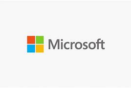

Lista não ordenada
lista de definição
|
As linguagens de programação são linguagens usadas para a comunicação com o computador. Estas linguagens são constituídas de comandos, que quando utilizados corretamente, executam uma ação. A programação nos computadores não tem uma data correta de início. Tudo começou na década de 30, com os primeiros computadores elétricos. Em 1948, Konrad Zuse publicou sua criação, a linguagem de programação Plankalkül. Na época, ainda não tinha muita utilidade, então foi esquecida. Antes da programação passar para o computador, eram usados cartões de papelão que eram perfurados, criando códigos. |
|  | A Microsoft é uma empresa de tecnologia fundada por Bill Gates e Paul Allen, em 1975, nos Estados Unidos. Com sede em Redmond (Washington), a companhia atua no suporte e desenvolvimento de softwares, dispositivos e serviços relacionados à computação pessoal, produtividade e soluções em nuvem. Além disso, a marca também tem expressiva participação nos segmentos de inteligência artificial, realidade virtual e games. |
| texto 3 | texto 3 |